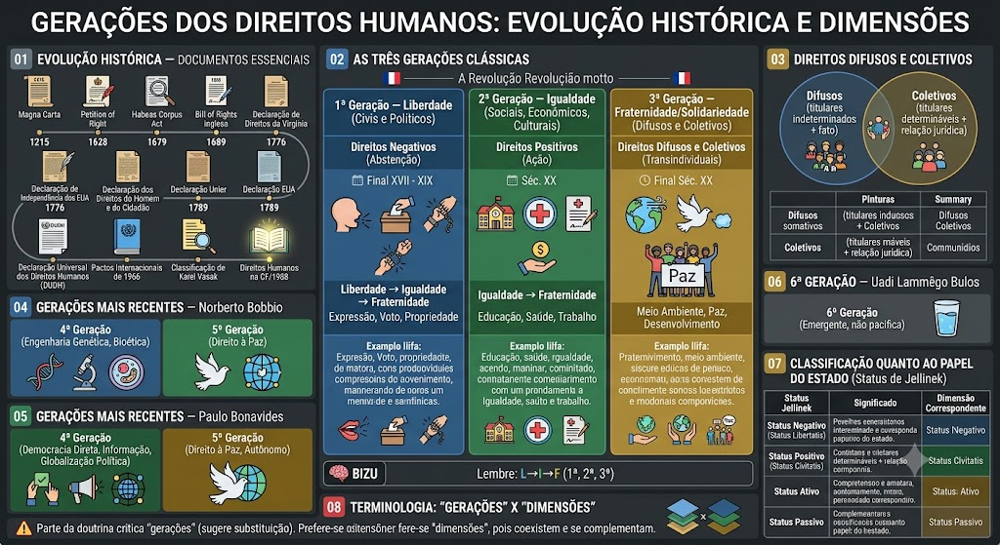

Magna Carta (1215)
Magna Carta (1215)
Primeiro relato de direitos humanos. Limitou o poder do rei pela primeira vez na Inglaterra, garantindo liberdades civis: devido processo legal e proteção contra impostos abusivos.
Petition of Right (1628) e Habeas Corpus Act (1679)
Petition of Right (1628) e Habeas Corpus Act (1679)
Consolidação dos direitos civis contra a arbitrariedade da Coroa na Inglaterra. O Habeas Corpus Act é um dos primeiros marcos da proteção contra a prisão arbitrária.
Bill of Rights inglesa (1689)
Bill of Rights inglesa (1689)
Marco da transição do absolutismo para a monarquia parlamentarista na Inglaterra. É um dos documentos fundamentais do constitucionalismo moderno.
Declaração de Direitos da Virgínia (1776) e Declaração de Independência dos EUA (1776)
Declaração de Direitos da Virgínia (1776) e Declaração de Independência dos EUA (1776)
Primeiro documento constitucional a consagrar direitos fundamentais inalienáveis antes mesmo da Revolução Francesa. A Virgínia influenciou diretamente a Revolução Francesa.
Declaração dos Direitos do Homem e do Cidadão (1789)
Declaração dos Direitos do Homem e do Cidadão (1789)
Marco supremo do liberalismo e da 1ª Dimensão/Geração na França.
Declaração Universal dos Direitos Humanos (1948)
Declaração Universal dos Direitos Humanos (1948)
Marco histórico da ONU, adotada em 10 de dezembro de 1948 pela Resolução 217-A, como resposta aos crimes do nazismo. É uma resolução da Assembleia Geral, não um tratado, mas possui valor moral e político universal.
Pactos Internacionais de 1966 (International Bill of Rights)
Pactos Internacionais de 1966 (International Bill of Rights)
Complementam a DUDH e tornam os direitos juridicamente vinculantes para os Estados que os ratificam:
Carta Internacional dos Direitos Humanos = DUDH (1948) + PIDCP (1966) + PIDESC (1966)
- PIDCP — Pacto Internacional dos Direitos Civis e Políticos
- PIDESC — Pacto Internacional dos Direitos Econômicos, Sociais e Culturais
Classificação de Karel Vasak (1979)
Classificação de Karel Vasak (1979)
Apresentada no Instituto Internacional de Direitos Humanos de Estrasburgo, baseada nos princípios da Revolução Francesa: Liberdade, Igualdade e Fraternidade, correspondendo às três primeiras gerações.
Direitos Humanos na CF/1988
Direitos Humanos na CF/1988
A Constituição Brasileira de 1988 consagra a dignidade da pessoa humana, cidadania, valores sociais do trabalho, e garante direitos à vida, igualdade, liberdade, segurança e propriedade, entre outros.
1ª geração — Liberdade
1ª geração — Liberdade
Direitos civis e políticos, ligados à ideia de abstenção do Estado. Surgem com as revoluções liberais (séc. XVIII): vida, liberdade, propriedade, participação política.
Valor-fonte: Liberdade
Característica: Direitos negativos — exigem abstenção do Estado
Período: Final do século XVII e século XIX (revoluções liberais / revolução francesa)
💡 Exemplos: liberdade de expressão, reunião, associação, pensamento, igualdade perante...
1ª geração — Dia a dia
1ª geração — Dia a dia
Você pode falar o que pensa (liberdade de expressão), se reunir com amigos (liberdade de reunião), criar uma associação de bairro (liberdade de associação), votar nas eleições (direito ao voto) e ter sua casa protegida (direito de propriedade) — tudo isso sem o Estado te impedir.
2ª geração — Igualdade
2ª geração — Igualdade
Direitos sociais, econômicos e culturais, que exigem prestações positivas do Estado. Ganham força a partir do início do séc. XX, com as Constituições Mexicana (1917) e de Weimar (1919).
Valor-fonte: Igualdade
Característica: Direitos positivos — exigem ação positiva do Estado
Período: Século XX (Revolução Industrial)
💡 Exemplos: educação, saúde, trabalho, moradia, alimentação, cultura, lazer, previdência social.
2ª geração — Dia a dia
2ª geração — Dia a dia
Seu filho tem direito a estudar na escola pública (educação), quando você fica doente vai ao SUS (saúde), você tem direito ao emprego com carteira assinada (trabalho), pode se aposentar (previdência) e ter uma casa digna (moradia). O Estado DEVE fornecer isso, não só permitir — é obrigação dele!
3ª geração — Fraternidade/Solidariedade
3ª geração — Fraternidade/Solidariedade
Direitos difusos e coletivos, de titularidade transindividual: meio ambiente, paz, desenvolvimento, autodeterminação dos povos, patrimônio comum da humanidade.
Valor-fonte: Solidariedade/Fraternidade
Característica: Direitos difusos e coletivos — transcendem fronteiras nacionais
Período: Final do século XX (Pós-2ª Guerra Mundial)
💡 Exemplos: direito ao desenvolvimento, meio ambiente saudável, direito à paz, direito à comunicação, direitos do consumidor.
3ª geração — Dia a dia
3ª geração — Dia a dia
Você tem direito a respirar ar limpo (meio ambiente), o Brasil não pode poluir o Rio de Janeiro sem prejudicar outros países (meio ambiente é de todos), você pode reclamar quando compra um produto estragado (direito do consumidor), e o mundo quer a paz entre nações (direito à paz). São direitos que transcendem fronteiras — todos os povos precisam cooperar!
Mnemônico
Mnemônico
Lembre do lema francês na ordem: Liberdade → Igualdade → Fraternidade, que corresponde exatamente à 1ª, 2ª e 3ª geração.
Para Leigos
Para Leigos
Imagine que os direitos fundamentais são como 'regras de convivência' que a sociedade conquistou ao longo do tempo. A 1ª geração surgiu quando as pessoas queriam proteção contra o rei/poderoso — tipo 'não me prenda sem motivo'. A 2ª veio quando o povo percebeu que só liberdade não bastava — precisava de escola, hospital e emprego. A 3ª surgiu quando vimos que somos todos vizinhos no mesmo planeta — precisamos cuidar do meio ambiente e da paz mundial.
Direitos Difusos
Direitos Difusos
São direitos indivisíveis, pertencentes a pessoas indeterminadas, ligadas apenas por uma circunstância de fato. Não é possível identificar previamente todos os seus titulares.
📌 Exemplo: direito ao meio ambiente equilibrado, ao ar limpo e à preservação do patrimônio histórico.
Direitos Coletivos
Direitos Coletivos
Também são direitos indivisíveis, porém pertencem a um grupo, categoria ou classe de pessoas determináveis, unidas por uma relação jurídica em comum.
📌 Exemplo: direitos dos alunos de uma escola, dos servidores públicos ou dos consumidores de uma mesma empresa.
Resumo da diferença
Resumo da diferença
Direitos Difusos = titulares indeterminados + vínculo por circunstâncias de fato.
Direitos Coletivos = titulares determináveis + vínculo por relação jurídica comum.
4ª geração (Bobbio)
4ª geração (Bobbio)
Trata dos avanços da engenharia genética, biotecnologia e bioética — pesquisas com células-tronco, clonagem, manipulação genética.
5ª geração (Bobbio)
5ª geração (Bobbio)
Coloca o direito à paz como 5ª dimensão, por uma perspectiva de garantia da própria sobrevivência humana diante do avanço tecnológico.
4ª geração (Bonavides)
4ª geração (Bonavides)
Ligada à democracia direta, à informação e à globalização política.
5ª geração (Bonavides)
5ª geração (Bonavides)
Classifica o direito à paz como 5ª geração, destacando sua autonomia em relação aos direitos de solidariedade (3ª geração).
6ª geração
6ª geração
Alguns autores apontam o direito à água potável como uma 6ª dimensão emergente, ainda não pacífica na doutrina.
Mnemônico
📌 Negativo = abstenção (1ª) | Positivo = prestação (2ª) | Ativo = participação (voto, 1ª política) | Passivo = deveres (transversal)
Gerações vs. Dimensões
Gerações vs. Dimensões
Parte da doutrina critica o termo \"gerações\", pois passa a falsa ideia de que uma geração substitui a anterior. Por isso, prefere-se falar em dimensões, já que os direitos de todas as fases coexistem e se complementam.
Conceito e plano de eficácia
Conceito e plano de eficácia
Embora muitas vezes sejam usados como sinônimos na prática, as bancas cobram a diferença técnica:
Direitos Humanos — são aqueles consagrados no direito internacional (tratados, convenções, resoluções da ONU). Têm aplicação no plano internacional.
Direitos Fundamentais — são aqueles positivados no direito interno (inseridos no texto de uma Constituição rígida, como a CF/88). Têm aplicação no plano constitucional interno.
Essa distinção de plano de eficácia (internacional vs. constitucional) é fundamental para questões de prova.
Mapa-mental
Material de estudo: Gerações dos Direitos Humanos
Material complementar · Ver fonte no GitHub
Classificação quanto ao papel do Estado (Status de Jellinek)
Teoria dos Status de Georg Jellinek
| Status de Jellinek | Significado | Dimensão Correspondente |
|---|---|---|
| Status Negativo (Status Libertatis) | O Estado deve abster-se de intervir na liberdade do indivíduo. Corresponde aos direitos de 1ª geração (civis e políticos), que exigem apenas que o Estado não interfira — exemplo: liberdade de expressão, onde o Estado não pode censurar. | 1ª Dimensão (Civis) |
| Status Positivo (Status Civitatis) | O indivíduo pode exigir prestações e serviços públicos do Estado. Corresponde aos direitos de 2ª geração (sociais, econômicos e culturais), que exigem ação positiva do Estado — exemplo: direito à saúde, onde o Estado deve construir hospitais e oferecer atendimento. | 2ª Dimensão (Sociais/Econômicos) |
| Status Ativo (Status Politicus) | O indivíduo participa da formação da vontade do Estado (voto, eleições, mandato). Corresponde aos direitos políticos, que garantem a participação ativa na vida pública — exemplo: direito ao voto, direito de candidatar-se a cargos eletivos. | 1ª Dimensão (Políticos) |
| Status Passivo (Status Subiecti) | O indivíduo está submetido ao poder do Estado e aos deveres impostos pela ordem jurídica. Corresponde aos deveres fundamentais do cidadão — exemplo: pagamento de impostos, reserva de ordem, serviço militar (quando houver). | Transversal |
Diferenciação conceitual estrita (Direitos Humanos vs. Direitos Fundamentais)
Mapa-mental
